자연어 처리 기본 - 콜세라 강의 1주차 1리뷰
배경 지식이 있는 상태에서 수업을 들으면 더 잘 이해가 되지 않을까 싶어 요약본을 만들어 봤습니다.
강의 특징에 따라 ‘ 이 강의에선 무엇을 배웁니다’ 만 설명할 수도, 혹은 해당 강의 내용 일부분/전체를 설명할 수도 있습니다.
회원가입만 하면 coursera의 deeplearning.ai 관련 강의 영상을 전부 무료로 볼 수 있습니다.
(하지만 유료 구독을 하고 매 주 코딩 과제를 하시길 추천 드립니다.)
강의 주소 : 링크
1.Why sequence models(시퀀스 모델을 사용하는 이유)
이번 강의에선 시퀀스(텍스트나 음향 데이터와 같이 한 데이터가 (시간)순서대로 나열된 경우) 시퀀스 모델을 사용하는 이유를 설명합니다.
자세히/간단히
시퀀스 모델의 파라미터(W,b 값들)는 다른 모델 구조와는 다르게 시간 순서에 따른 정보까지 가집니다.
시퀀스 모델은 입력 or 출력 데이터가 ‘순서’ 를 가질 경우에 유용합니다.
ex) 음성 데이터(파동의 순서), 텍스트 데이터(문장 구성 토큰의 순서), 동영상 데이터(이미지의 순서), DNA 염기서열(아미노산 순서) 등등..
2.Notation(시퀀스 모델 강의에서 사용할 용어 정리)
이번 강의에선 시퀀스 모델 강의에서 사용할 용어(Notation)를 설명합니다.
x <t>
x(i) <t>
Tx
T(i)x
정도가 있습니다.
자세히/간단히
입력 시퀀스 x 가 9 단어로 이뤄진 문장 ‘Harry Potter and Hermione Granger invented a new spell’ 일 때,
x <t> 는 입력 시퀀스 데이터의 t 번 째 요소입니다. (t는 time step)
x(i) <t> 는 m개 데이터 중 i번 째 입력 시퀀스 데이터의 t 번 째 요소입니다. (t는 time step)
Tx = 9 는 입력 시퀀스 데이터의 요소 수(time step 수)는 9 라는 뜻입니다.
T(i)x = 9 는 m개 데이터 중 i번 째 입력 시퀀스 데이터의 요소 수(time step 수)는 9 라는 뜻입니다.
c.f.) Y(출력값 혹은 라벨값) 이 시퀀스 데이터일 경우에도 마찬가지로 사용합니다. (위 notation에서 x만 y로 바꾸면 되겠죠.)
텍스트 데이터를 다룰 땐 아래 그림과 같이 사전(vocabulary)을 만들어 이용합니다.(이 경우는 단어 단위 사전)
사전에 들어 갈 요소는 ‘음소’ , ‘어절’, ‘음절’ 등 여러 종류의 단위가 가능하며, 이를 토큰 이라고 합니다.
(왠만하면 앞으로는 토큰 이라고 얘기 하겠습니다.)
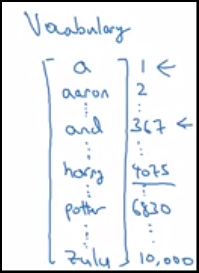
텍스트 데이터는 시퀀스 데이터 중 하나입니다.
텍스트는 string 값이지만 컴퓨터는 string 보단 숫자를 더 잘 이해할 수 있기 때문에 숫자로 치환해 줍니다.
자연어 처리에서 string -> 숫자 로 바꿀 때, ‘벡터’ 로 표현하며, ‘one-hot 벡터 인코딩 방법’ 과 ‘단어 embedding 방법’을 사용합니다.
one-hot 벡터 인코딩은 하나의 요소만 1이고 나머지는 0인 벡터로 인코딩(or 치환) 하는 방법 입니다.
위 그림에서, vocabulary의 1번째 토큰은 “a” 이며, 1번째 토큰을 one-hot 인코딩 하면
[1 0 0 ….. 0] 이 됩니다.(1 번째 원소만 1값)
벡터의 크기는 사전의 크기와 동일합니다.(vocabulary 가 100개 토큰으로 이뤄져 있다면 벡터 크기는 1x100)
(c.f. 벡터 index 시작은 0이지만 위 설명에서만 1이라고 생각합시다 ㅎㅎ)
그렇다면 vocabulary의 i 번째 토큰을 one-hot 인코딩 하면
[0 . . … 1 . . …. 0] 인 i 번째 요소만 1인 벡터가 됩니다.
( c.f. vocabulary에 없는 토큰은 vocabulary에 “unk”(==unknown) 이라는 토큰을 추가해 줌으로써 해결합니다.
vocabulary에 없는 토큰은 전부 “unk” 토큰으로 처리하는 거죠.
이러한 토큰을 NLP 영역(domain)에선 “스페셜 토큰” 이라고 하며,
UNK(Unknwon), SEP(seperateor), PAD(padding), SOS(Start of Sentence), EOS(End of Sentence) 등이 있습니다. )
3.Recurrent Neural Network Model(RNN, 순환 신경망 모델)
이 강의에선 순서가 있는 데이터를 처리할 때 standard network 사용의 단점과, 이를 개선한 RNN을 소개합니다.
자세히/간단히
(아래 그림을 봐주세요)
RNN 모델은 Cell 로 이뤄져 있습니다. 아래 그림에서 좌/우의 RNN 모델은 같은 모델이며 Cell 하나로 이뤄진 모델입니다.
Cell은 이전 time step의 활성화 값(activation a<t-1>)과 현재 time step의 입력 데이터 x<t>
를 입력받아 파라미터(Waa, Wax, Wya)값과 연산해 다음 활성화 값 a<t> 과 현재 time step의 출력값 y^<t>
를 출력합니다.
아래 그림의 경우에선 Tx 번의 연산 동안 동일한 가중치 Waa, Wax, Wya으로 Tx 개의 출력값(y^), 활성화 값(a) 를 계산할 것입니다.
Waa, Wax, Wya는 하나 씩 있지만 back propagation 을 위한 cache는 종류 별로 Tx 개 만큼 생기겠죠? 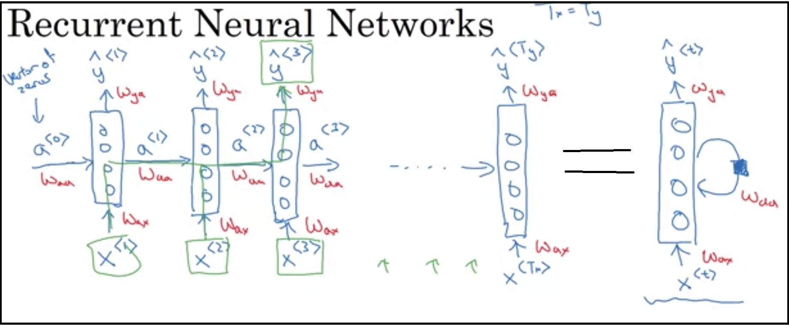
(아래 그림을 봐주세요)
time step t 에선 a<t-1>와 Waa, x<t>와 Wax 의 곱을 각각 해서 현재 time step 활성화 값 a<t>를 구합니다.
또한, 두 연산은 Waa, Wax를 연결(concatenate)하고 a<t-1>와 x<t>를 연결한 행렬을 곱함으로써 연산 횟수를 줄일 수가 있죠.
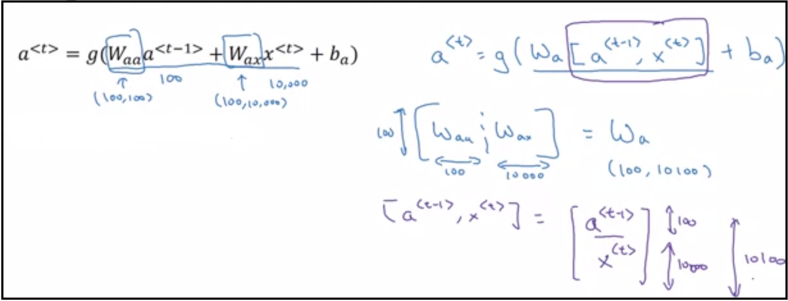
4.Backpropagation through time
이번 강의에선 BPTT(Back Propagation Through Time) 에 대해 설명합니다.
RNN 모델의 역전파(Back Propagation)는 BPTT(Back Propagation Through Time) 이라는 방법을 이용합니다.
RNN 모델 Cell이 정방향 전파(Feed Forward)가 끝날 때까지 총 T 번의 time step 만큼 정방향 전파를 하므로, 역전파 역시 T time 만큼(Through ‘T’ Time) 하는 것이죠.
자세히/간단히
RNN 모델에선 Loss function을 아래와 같이 정의합니다.
모든 Time Step들의 Loss 값 평균을 RNN 모델의 Loss 값으로 하고,
역전파(Back Propagation)는 Time Step 만큼 이뤄집니다. (T번째의 Wya 가중치 변화량 구한 뒤 T번째 Wa 가중치 변화량을 구하고 해당 작업을 0 번째 Time Step까지 쭉쭉쭉…)
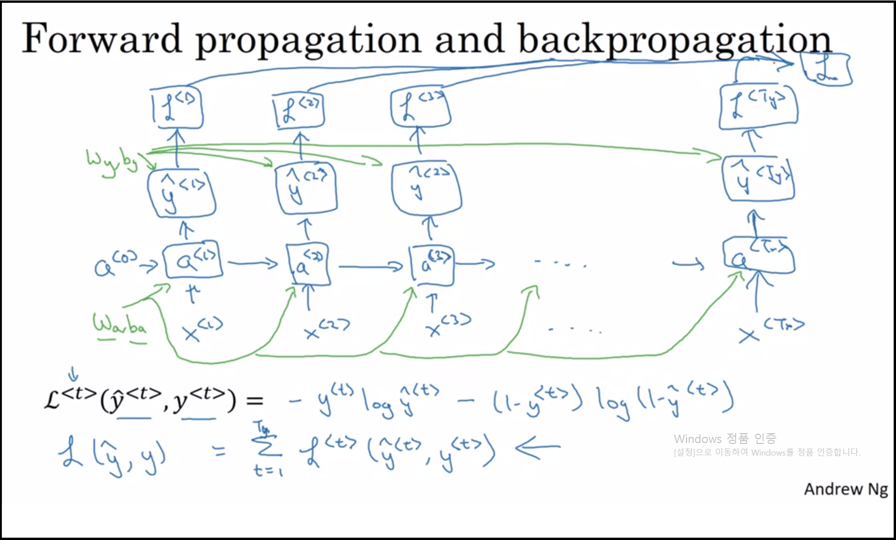
5.Different types of RNNs
이번 강의에선 입력/출력 데이터의 특성에 따른 몇 종류의 RNN를 살펴봅니다.
사실 RNN 모델(RNN Cell) 자체는 전부 동일하지만 ‘입력/출력 데이터를 어떻게 input 하고 어떻게 output 하는지’ 에 대한 구조만 다릅니다.
‘Many-to-Many’, ‘Many-to-one’, ‘One-to-one’ 등등… 의 여러 구조가 있으며
to 앞은 Tx(입력 데이터 x의 time step), to 뒤는 Yt(출력 데이터 y의 time step) 이라 생각하심 됩니다.
자세히/간단히
- ‘one-to-one’
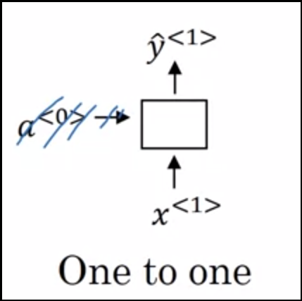 입력 데이터가 1개의 time step, 출력 데이터도 1개의 time step만 가집니다.
- ‘one-to-many’
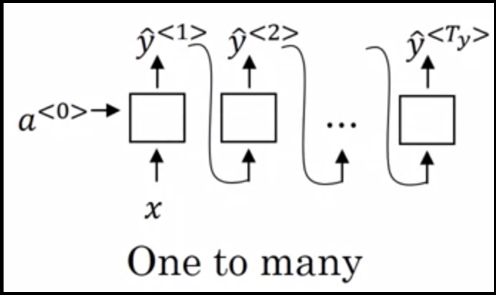 입력 데이터는 1번째 time step에만 하나 들어가지만 출력 데이터는 T개의 time step만큼 나옵니다. (즉 T개의 출력 데이터 Y)
또한, 화살표를 보면 알 수 있듯이 i 번째 출력 데이터가 i+1 번째 Time step의 입력 데이터로 이용됩니다.
(즉 0번째 time step의 입력 데이터는 x이며, 이후 1~T 번째 입력 데이터는 이전 time step의 출력 데이터를 이용합니다.)
- ‘many-to-one’
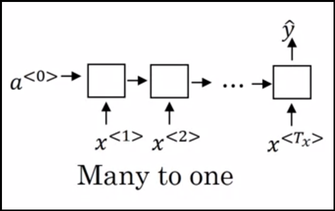 ‘one-to-many’와 반대로 입력 데이터가 T개의 time step을 가집니다.
출력 데이터는 time step만큼 ‘존재 했었지만’, 마지막 time step의 출력 데이터 빼곤 버립니다.(마지막 출력 데이터만 원하므로).
- ‘many-to-many’ - type 1
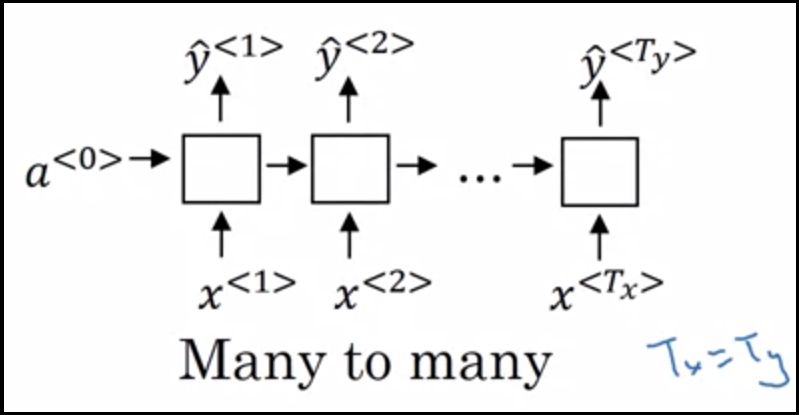 입력 데이터는 Tx의 time step을 가지며, 출력 데이터 또한 동일한 수의 time step을 가집니다.
- ‘many-to-many’ - type 2(인코더-디코더)
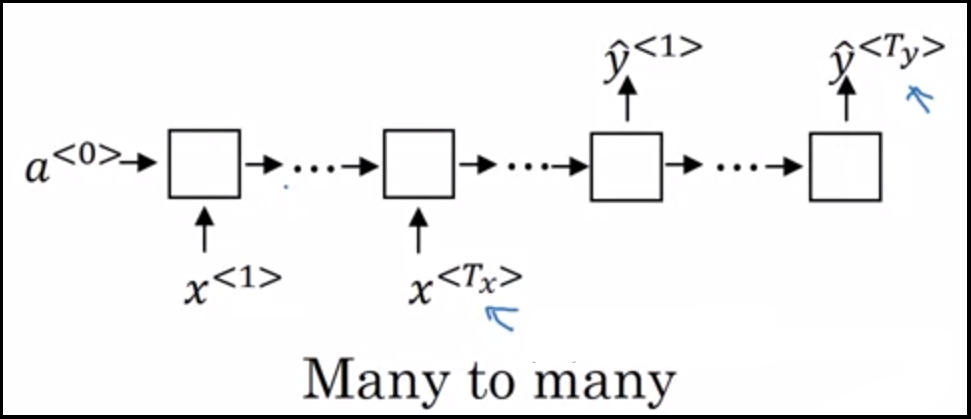 입력 데이터가 있는 cell과 입력 데이터가 없는 cell이 있습니다.(2개의 RNN cell을 가지는 모델입니다.)
각각을 인코더(Encoder) cell, 디코더(Decoder) cell 이라 부릅니다.
처음 RNN을 배울 때, RNN cell은 0 번째 time step에선 활성화 벡터 a를 0벡터를 입력 활성화 벡터로 이용했었죠.
인코더-디코더 구조에선
인코더 RNN cell은 0벡터 활성화 벡터 a를 받고
디코더 RNN cell은 인코더의 최종 활성화 벡터인 aTx 를 입력 활성화 벡터로 받습니다.(이 때 aTx 을 context vector 라고 부릅니다.)
6.Language model and sequence generation
이번 강의에선 RNN을 이용한 언어 모델, (문장)시퀀스 생성 에 대해 수업합니다.
언어 모델이란 구글 문장 자동완성 기능처럼 주어진 문장 다음에 올 단어or문장을 예측하는 모델입니다.(아래 그림)
1주차 5강의 RNN 모델 중 Many-to-Many 혹은 One-to-Many 구조 둘 다 이용할 수 있고 둘을 섞을 수도 있습니다.
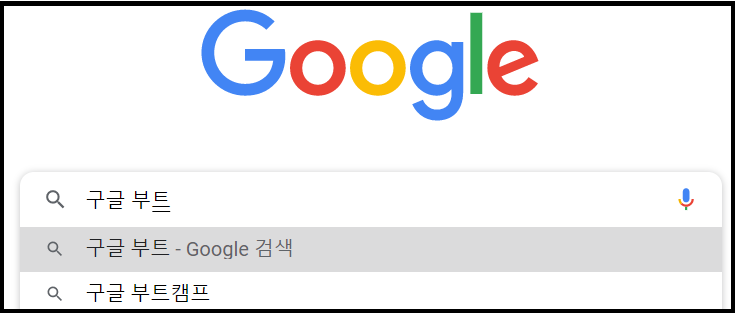
딥러닝을 사용하지 않고도 만들 수 있습니다!!(조건부 확률을 이용)
위에서 언급한 Many-to-Many, One-to-Many 모델을 둘 다 설명해 보겠습니다.
(더 이해하기 쉬우시도록 강의내용과 좀 다르게 설명합니다.)
c.f.) Andrew ng 교수님은 x <1> 토큰으로 0벡터를 input 하셨는데,
이건 아마 학습 데이터가 “Cats average…..” 하나만 있는 경우에, sequence generation model을 어떻게 학습 시키는지를 설명하고 싶으셨던 것 같습니다.
만약 학습 데이터가 여러개일 경우, 학습을 시키고 입력 데이터로 항상 0 벡터만 넣는다면 항상 동일한 문장을 예측/생성(generation) 하겠죠.
자세히/간단히
- Many-to-Many 구조(Teacher Force, 교사 강요)
1주차 2강에서 말씀드린 스페셜 토큰 중, <EOS>(End Of Sentence) 라는 녀석이 있었죠?
언어 모델을 학습시킬 때, 입력 데이터의 맨 마지막 토큰이 <EOS> 라면 문장 예측을 끝내도록 학습시킬 수 있습니다.
Many-to-Many 구조는 Teacher Force(교사 강요) 학습 방법이라고도 할 수 있는데요.
t+1 번째 입력 토큰으로 입력 데이터 x <t+1> 만을 사용하는 방법이며,
(실제 t번째의 예측값( y <t+1> )과 ‘같아야 할 토큰’을 입력으로 넣으므로 아래 그림에선 x <t+1> = y <t+1> 라고 적습니다.)
(주의 - 그림에서 y^ 과 y 을 잘 구별해서 보셔야 합니다. y^은 feed forward 시의 출력값이었죠?!)
t 번째 예측이 잘못됐어도 x <t+1> 를 이용해 올바른 방향 학습시킬 수 있기에 ‘교사 강요’ 라고 불립니다.
학습은 빠르게 될 지 몰라도 모델이 입력 데이터에 편향을 가질 우려가 있습니다. 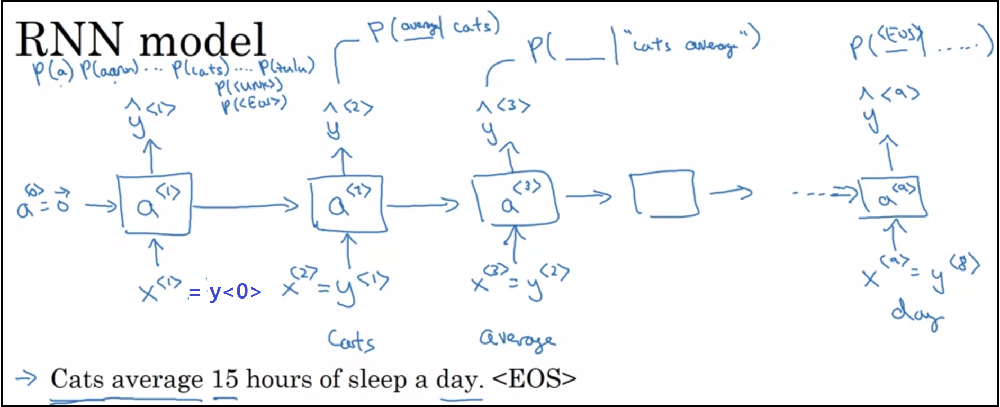
- One-to-Many 구조
첫 번째 입력 토큰만(one) 넣으면 문장이 자동완성(to many!!) 되는 구조입니다.
One-to-Many는 첫 번째 입력 토큰을 넣어서 나온 예측 데이터를(y^ <t> ) 다음 입력값으로 사용했었죠?
여기서 발생하는 문제는, ‘언제 문장 생성을 종료하지?’ 입니다.
해결 방법은 <EOS> 토큰입니다.
만약 y^ <t> 가 <EOS> 토큰이라면, t+1 번째 입력값으로 <EOS> 토큰이 들어가고, 문장 예측은 종료하게 되겠죠.
(물론 <EOS> 나왔을 때 문장 예측 종료하도록 하는 것은 개발자의 몫이죠.) 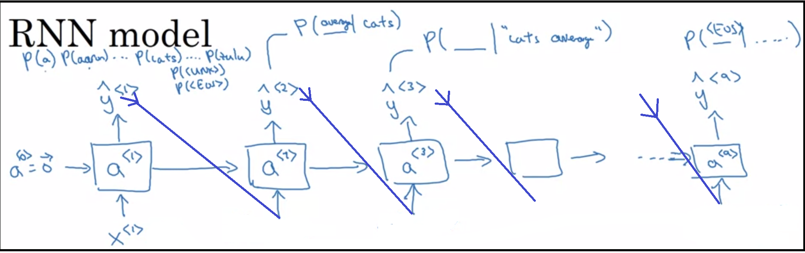
- 1,2를 섞어서
1번과 2번 방법을 섞어서 사용하면 둘 다의 장점을 가져갈 수가 있습니다. (학습도 빨리 되고 편향도 줄이고)
예를 들면 홀수 번째 epoch은 1번 방법으로, 짝수 번째 epoch은 2번 방법으로 학습시키는 거죠!
7.Sampling novel sequences
이 강의에선 1주차 6강에서 나온 Language Model을 이용해 문장 생성을 하는 방법에 대해 수업합니다.
학습시킨 모델을 이용해 문장을 생성할 땐 One-to-Many 구조로 예측 시킵니다.
c.f.) 자동완성의 경우엔 n개 단어를 입력해 뒤에 나올 문장을 자동완성 시킵니다.
(one-to-many라기 보단 n-to-many 이죠! n+1부턴 one-to-many 구조처럼 됩니다.)
추가로, 문자를 토큰 단위로 한 모델도 수업합니다.
단어를 토큰 단위로 하는 것 보다 vocabulary가 훠어어얼~~씬 작아진다는 장점이 있겠지만,
어떤 토큰 단위를 사용하건 간에 다 장단점이 있습니다.
8.Vanishing gradients with RNNs
이번 강의에선 RNN 모델의 vanishing gradients 문제점에 대해 설명합니다.
RNN 모델은 시퀀스 데이터 학습에 적합한 구조를 가집니다.
하지만 ‘긴 시퀀스’ 를 다루는 경우, 앞쪽(0 번째 time step에 가까운 쪽)의 정보가
뒷쪽(Tx 번째 time step에 가까운 쪽)의 정보에 ‘충분히’ 전달되지 않는 문제가 생깁니다.(앞쪽의 정보가 점점 희미해지는 것이죠.)
이 문제는 결국 Back Propagation 에 영향을 미쳐 ‘앞의 정보를 뒤에까지 충분히 전달해 줄 수 있는 모델’ 을 만들지 못하는 거지요.
다음 두 강의에선 해당 문제점을 해결하기 위한 모델을 설명하는데, 두 모델 다 RNN의 개조형태라고 생각하심 됩니다.
9.Gated Recurrent Unit (GRU)
이 강의에선 GRU에 대해 설명합니다.
‘Gated’ 라는 뜻은 RNN Cell 내부에 ‘어떤’ 기능을 하는 ‘게이트’ 를 추가했다는 말입니다.
자세히/간단히
RNN의 activation 값을 Hidden State 라고도 합니다.
GRU에선 activation 값을 Cell State 라고 부릅니다.
GRU는 Reset Gate, Update Gate 두 종류의 게이트를 가집니다.
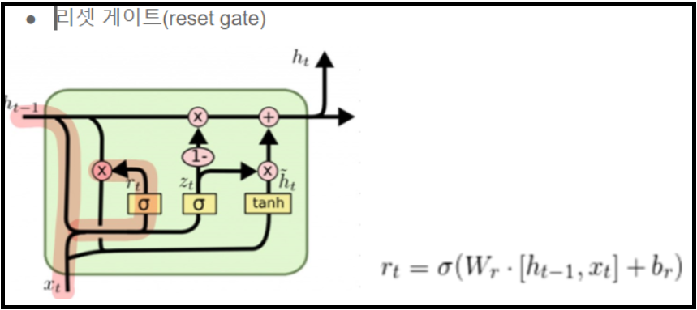 Reset Gate는 이전의 Cell State를 ‘얼마나 가져올지’ 를 결정해 줍니다.
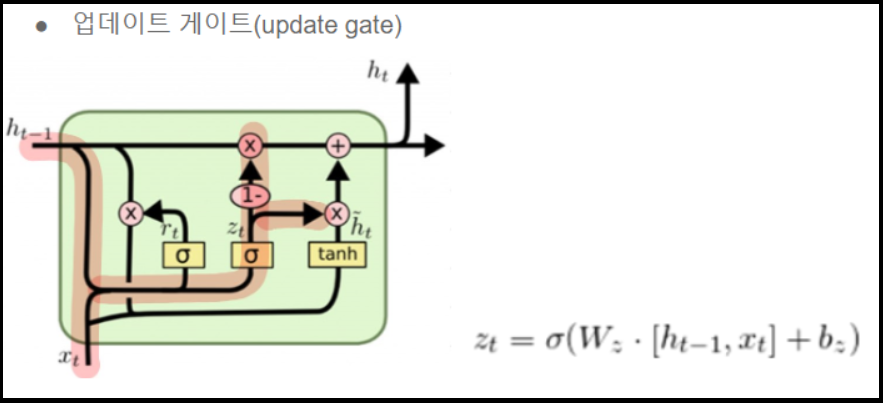 Update Gate는 현재 들어온 정보(input값에 대한 정보)를 ‘얼마나 가져올지’ 를 결정해 줍니다.
Reset, upadate 두 Gate의 결괏값을 이용해
‘이전 time step 까지의 정보’ 와 ‘새로운 input date의 정보’ 를 적절한 비율로 가진 다음 Cell State를 계산해 줍니다.
그 결과 GRU는 긴 시퀀스 데이터의 경우에도 앞 쪽의 정보를 뒷 쪽에 적절히 가져갈 수 있게 됩니다.
(앞쪽의 정보를 필요한 만큼 뒷쪽까지 가져간다!)
10.Long Short Term Memory (LSTM)
이 강의에선 LSTM에 대해 설명합니다.
GRU와 아이디어 자체는 비슷하며, LSTM은 Cell State와 Hidden State를 둘 다 가진다는 큰 차이가 있습니다.
Cell State는 장기 상태(Long Term Memory)
Hidden State는 단기 상태(Short Term Memory) 를 저장/전달 합니다.
입력 Gate, 삭제 Gate, 출력 Gate 총 세 개의 Gate를 가집니다.
GRU에 보다 더 긴 시퀀스 데이터 처리를 잘 하긴 합니다만. GRU, LSTM 중 누가 더 좋은지는 Task 마다 다릅니다.
c.f.) 강의는 GRU가 먼저 이지만 LSTM의 구조를 간소화 한 모델이 GRU 입니다.(뉴욕대 ‘조경현’ 교수님 작품!!!)
자세히/간단히
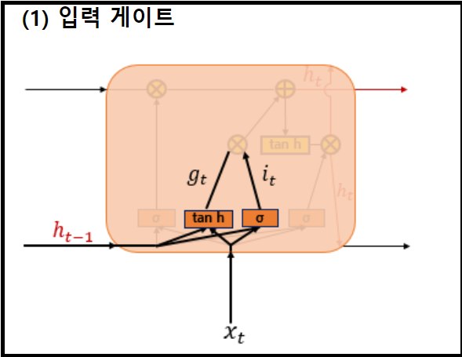 입력 게이트는 이전 Time Step의 Hidden State(단기 메모리)와 이번 Time Step의 input data의 연산으로
현재 상태를 얼마나 저장 할지를 정합니다.
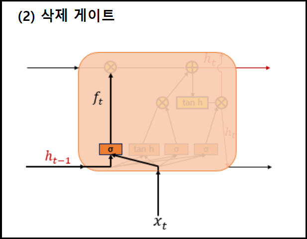 삭제 게이트는 이전 Time Step의 Hidden State(단기 메모리)와 이번 Time Step의 input data의 연산으로
이전 상태를 얼마나 삭제 할지를 정합니다.
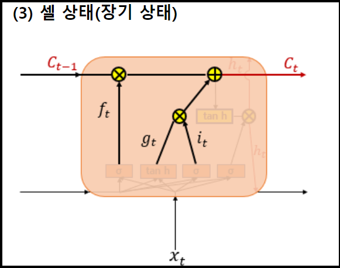 입력&삭제 게이트의 결과와 이전 Time Step의 Cell State(장기 메모리) 의 연산으로
이번 Time Step의 Cell State를 계산합니다.
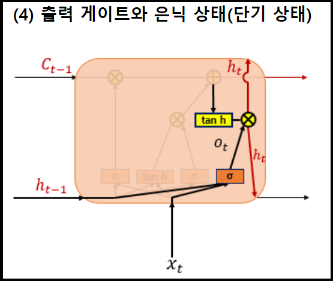 출력 게이트는 Hidden State(단기 메모리)와 input data을 연산해 어떤 결과 Ot 를 냅니다.
그 후, Ot 와 이번 Time Step의 Cell State 를 연산해 이번 Time Step의 Hidden State를 계산합니다.
첨부된 이미지들은 유원준 님의 저서에서 가져왔습니다.
유원준님 저서 링크